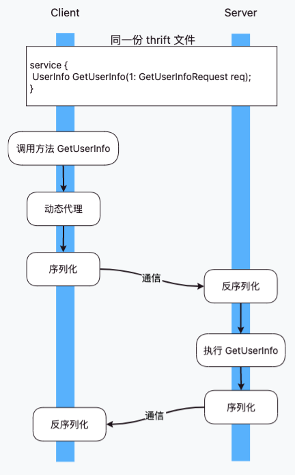

Thrift
简介
Thrift 协议是 RPC（Remote Procedure Call / 远程过程调用）的一种实现，它包含了以下四个部分：
- 动态代理
- 序列化与反序列化
- 通信，即数据的传输方式，可以基于 HTTP、TCP、UDP 多种方式实现传输
- 异常处理
使用
流程
- 编写 thrift 文件
- 通过代码生成工具将 thrift 生成服务端和客户端代码
- 服务端实现方法，客户端调用方法
与 HTTP 对比
使用思路
- HTTP：调用服务端暴露的接口（method + URL）得到响应数据
- Thrift：调用本地方法得到执行结果，这种本地方法并不是真的在本地执行服务端代码，而是通过动态代理屏蔽了底层逻辑，让调用方以为是调用本地方法

有效信息比
- HTTP 协议由于是无状态的通信协议，为了确认通信双方的信息，会携带大量无用的 Header 或者空行，传输效率比较低
- Thrift 只需要自己框架需要的信息，省去很多冗余数据
传输方式
- HTTP 1.x 使用明文传输，在 HTTP 2 之后才改为二进制传输
- Thrift 一般使用二进制传输，也支持使用文本传输
Thrift 的问题
- 客户端与服务器必须捆绑升级，比如服务端提供的接口变更了字段类型，客户端若不更新，则在序列化与反序列化过程中报错
- 二进制传输格式不方便调试
 目录
目录